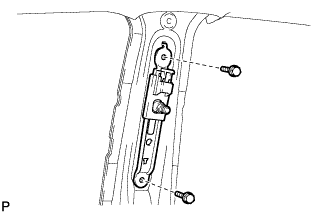
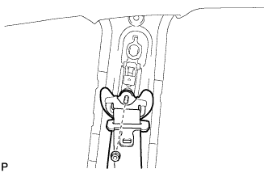
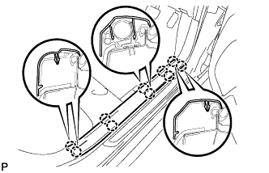

Front Shoulder Belt Anchor Adjuster Assembly Installation |
| 1. Install Front Shoulder Belt Anchor Adjuster Assembly |
 |
Install the front shoulder belt anchor adjuster assembly with the 2 bolts.
| 2. Install Front Seat Outer Belt Assembly Shoulder Anchor |
 |
Install the shoulder anchor of the front seat outer belt assembly RH with the nut.
| 3. Install Center Pillar Garnish RH |
 |
Pass the floor anchor portion of the front seat outer belt assembly RH through the center pillar garnish RH.
Engage the clip.
Install the center pillar garnish RH with the 2 screws.
| 4. Install Center Pillar Garnish LWR RH |
 |
Engage the 2 clips.
Engage the 2 claws B.
Spread the garnish left and right by hand, engage the 2 claws A and install the center pillar garnish LWR RH.
| 5. Install Front Seat Outer Belt Assembly Floor Anchor |
 |
Install the floor anchor portion of the front seat outer belt assembly RH with the bolt.
| 6. Install Lap Belt Outer Anchor Cover |
| 7. Install Rear Door Opening Trim Weatherstrip RH |
 |
Align the paint mark (white) of the weatherstrip with the arrow part on the body side shown in the illustration, and install the rear door opening trim weatherstrip RH.
| 8. Install Rear Door Scuff Plate RH |
 |
Engage the 8 claws to install the rear door scuff plate RH.
| 9. Install Front Door Opening Trim Weatherstrip RH |
 |
Align the paint mark (blue) of the weatherstrip with the arrow part on the body side shown in the illustration, and install the front door opening trim weatherstrip RH.
| 10. Install Front Door Scuff Plate RH |
 |
Engage the 10 claws and install the front door scuff plate RH.
| 11. Connect Battery Negative Terminal |
| 12. Inspect Seat Belt Function |
)| 13. Inspect Airbag Warning Light |
 |
Check that the warning light comes on when the IG is turned ON.
Check that the warning light goes off approximately 6 seconds after the IG is turned ON.
| 14. Setting Procedure When Disconnecting/Reconnecting Battery Terminal |
)